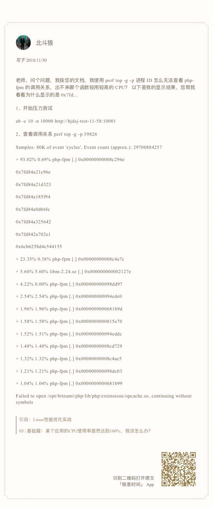
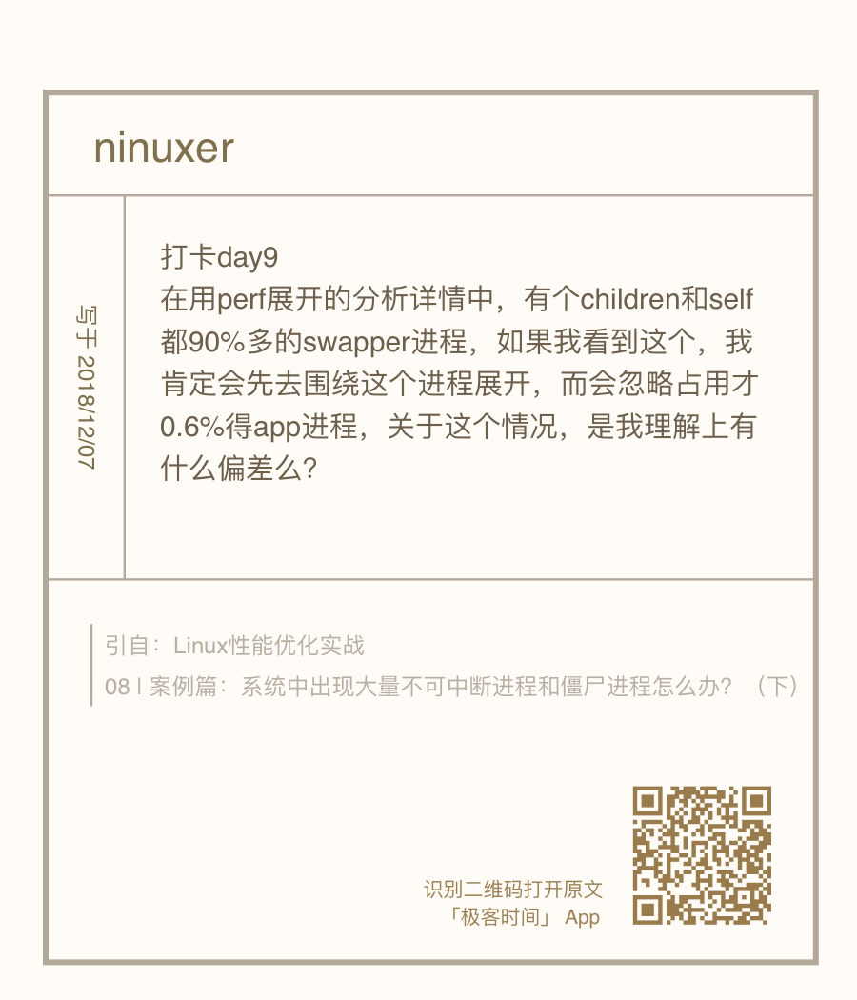
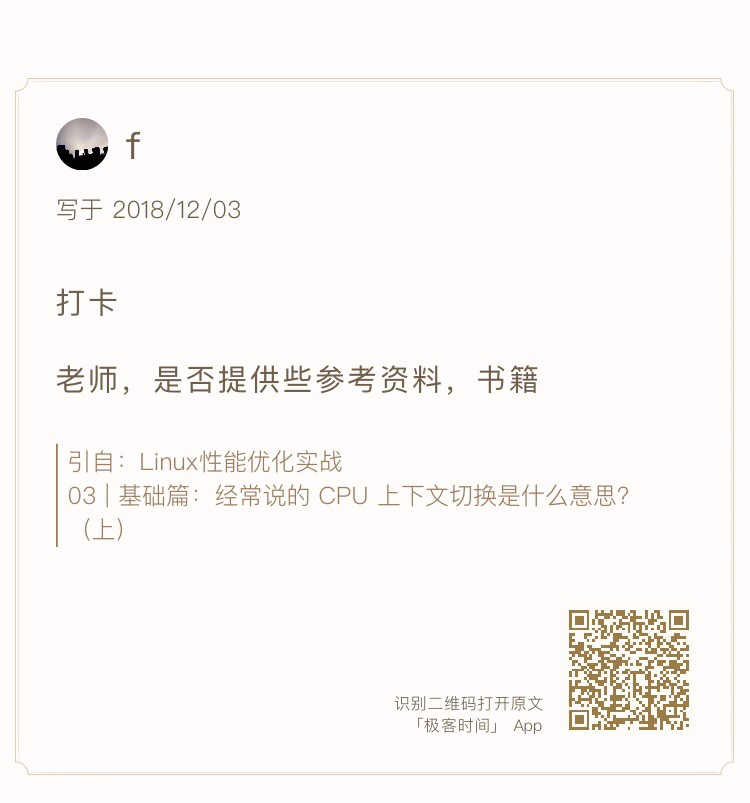

问题 1： 使用 perf 工具时，看到的是 16 进制地址而不是函数名

只要你观察一下 perf 界面最下面的那一行，就会发现一个警告信息：
Failed to open /opt/bitnami/php/lib/php/extensions/opcache.so, continuing without symbols
这说明，perf 找不到待分析进程依赖的库。当然，实际上这个案例中有很多依赖库都找不到，只不过，perf 工具本身只在最后一行显示警告信息，所以你只能看到这一条警告。
这个问题，其实也是在分析 Docker 容器应用时，我们经常碰到的一个问题，因为容器应用依赖的库都在镜像里面。
四个解决方法:
- 第一个方法，在容器外面构建相同路径的依赖库。这种方法从原理上可行，但是我并不推荐，一方面是因为找出这些依赖库比较麻烦，更重要的是，构建这些路径，会污染容器主机的环境。
- 第二个方法，在容器内部运行 perf。不过，这需要容器运行在特权模式下，但实际的应用程序往往只以普通容器的方式运行。所以，容器内部一般没有权限执行 perf 分析。
- 第三个方法，指定符号路径为容器文件系统的路径。
$ mkdir /tmp/foo $ PID=$(docker inspect --format {{.State.Pid}} phpfpm) $ bindfs /proc/$PID/root /tmp/foo $ perf report --symfs /tmp/foo # 使用完成后不要忘记解除绑定 $ umount /tmp/foo/ - 第四个方法，在容器外面把分析纪录保存下来，再去容器里查看结果。这样，库和符号的路径也就都对了。
问题 2：如何用 perf 工具分析 Java 程序
问题 3：为什么 perf 的报告中，很多符号都不显示调用栈
问题 4：怎么理解 perf report 报告

工具性能了解：
- perf 这种动态追踪工具，会给系统带来一定的性能损失。
- vmstat、pidstat 这些直接读取 proc 文件系统来获取指标的工具，不会带来性能损失。
问题 5：性能优化书籍和参考资料推荐

《性能之巅：洞悉系统、企业与云计算》
http://www.brendangregg.com/ 特别关注：http://www.brendangregg.com/linuxperf.html
- Linux 性能工具图谱
- 性能分析参考资料
- 性能优化的演讲视频